Last modified
한눈에 보기
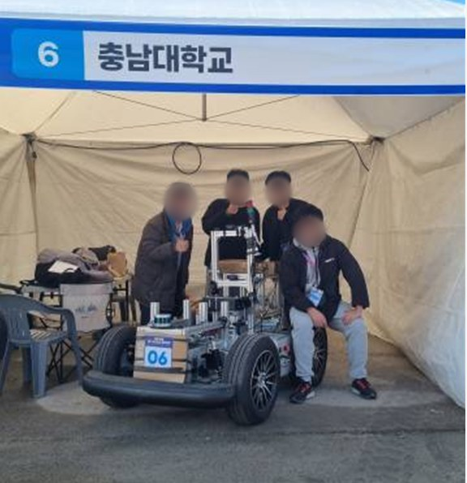

- 팀은 주행 중 인지 모듈(카메라·LiDAR로 주변을 알아보는 기능) 일부가 빠져도 측위와 경로추종을 유지하며 실차 대회를 완주했습니다(팀 회고 기준).
- 대회는 예선 10분·본선 15분의 단일 주행으로 GPS 음영구간(위성 위치 신호가 끊기는 구간)·멈춰 있는 장애물·주차 같은 미션을 통과하며 기록을 겨루는 실차 대회입니다.
- 4인 팀의 팀장으로 ERP42 4륜 전기차와 LiDAR·RTK-GPS(보정 신호로 오차를 줄인 GPS)·IMU를 다뤘습니다.
- 저는 센서 데이터를 합쳐 위치를 구하는 EKF 측위와 경로점(waypoint)을 따라가는 경로추종, 여러 주행 명령 중 따를 것을 고르는 판단 노드를 맡았습니다.
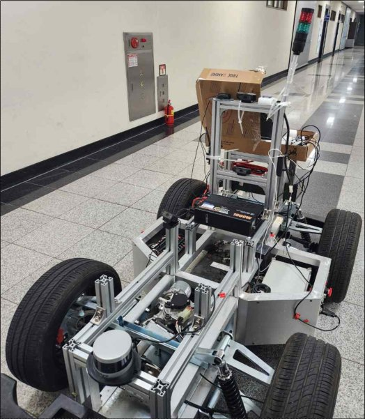
▶ 대회 진행 방식 참고 영상 — 우리 팀 시연이 아니라, 예선(트랙 주행·highway 예선 코스)을 통과한 상위 팀만 참가하는 본선 출전 팀들의 주행 영상입니다.
개발 중 알고리즘 테스트 기록 — 대회 주행 영상이 없어 대신 싣는 팀 내부 테스트 자료입니다. ▶ waypoint 추종 및 LiDAR 회피 테스트 영상
무엇을 만들었나
차가 센서로 자기 위치를 계산하고, 미리 기록해 둔 경로점(waypoint)을 따라 스스로 방향을 꺾으며 달리게 하는 주행 프로그램입니다.
팀 시스템은 바퀴 회전량·GPS·IMU로 계산한 차의 위치를 바탕으로 경로추종이 조향량을 정하고, 차량 통신 프로그램이 조향·속도·브레이크 명령을 ERP42에 보내는 구조입니다.
저는 개발에 함께 참여했고, 맡은 일은 아래 진행 과정에 적었습니다.
진행 과정
GPS 음영구간의 위치 추정
저는 각 센서를 구동해 얻은 바퀴 회전량·IMU·GPS 데이터를 바탕으로 EKF(여러 측정값을 합쳐 위치를 추정하는 필터)를 적용해, GPS가 끊기는 구간에서도 위치 계산을 이어 가도록 센서퓨전을 구성했습니다.
120m 안팎 음영구간과 IMU 오차
예선 코스에는 120m 안팎의 GPS 음영구간(철골 구조 등)이 있어 GPS가 잡히지 않았고, IMU는 갈수록 오차가 쌓였습니다(drift). 차가 자기 위치를 잃으면 경로점을 따라갈 기준도 함께 잃게 됩니다.
바퀴 회전량 계산 프로그램
팀은 먼저 바퀴 회전량으로 이동거리와 회전각을 계산하는 프로그램을 만들었고, 저는 이를 정리한 보고서에 바퀴 회전량과 IMU를 합치는 일을 다음 과제로 적어 두었습니다.
EKF 적용과 IMU 교체
이어 바퀴 회전량과 조향각으로 차가 움직인 만큼 위치를 계산하고 GPS로 바로잡는 EKF를 적용했으며, 차의 방향은 IMU로 구했습니다. 처음 쓰던 IMU는 쌓이는 오차를 잡지 못해 위치 추정이 부정확했고, 팀은 7차 원정 연습 뒤 IMU를 새로 구입해 교체했습니다.
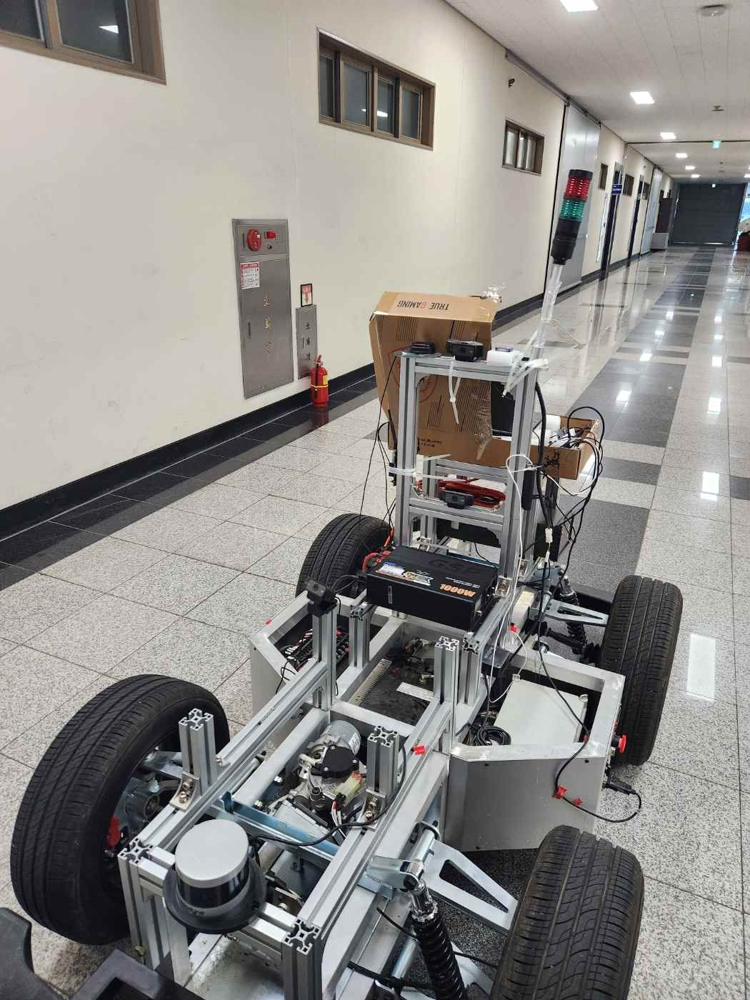
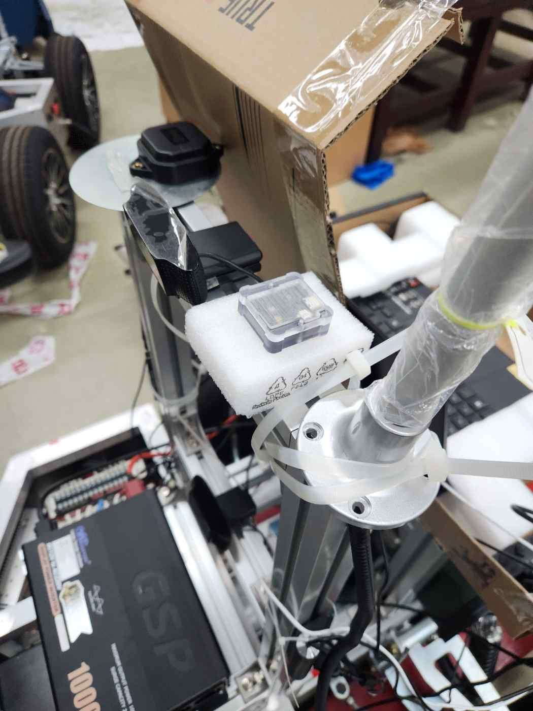
초기 GPS 원점의 지도 좌표
위치는 초기 GPS 위치를 원점으로 삼은 지도 좌표로 나오고, 팀은 미리 기록한 경로점도 같은 좌표로 바꿔 주행 경로로 내보냈습니다.
이 작업으로 센서 하나가 흔들려도 여러 측정값을 합쳐 위치를 유지하도록 설계하는 관점을 익혔습니다.
곡선 구간의 경로추종
저는 차가 경로점을 따라가되 곡선에서 조향이 튀지 않도록 하는 경로추종을 맡아 만들었습니다.
Pure Pursuit·Stanley 검토
팀원들과 여러 경로추종 기법(Pure Pursuit·Stanley)을 검토한 뒤, 팀 연구계획서의 설계대로 경로와의 방향 오차에 비례해 조향하고 직전 조향값과 섞는 단순한 방식으로 구현했습니다.
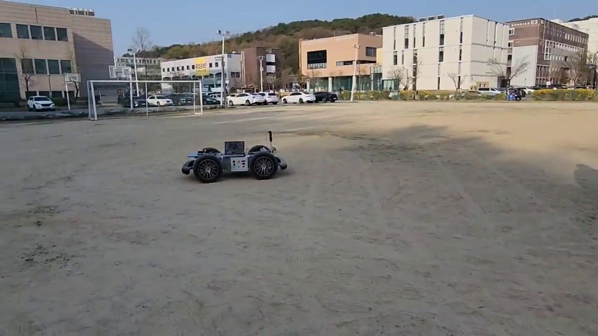
이 작업으로 정교한 기법보다 실제 차량에 맞는 단순한 구현을 고르는 판단을 익혔습니다.
주행 명령 중재(프로토타입)
저는 여러 기능이 낸 주행 명령 중 방금 들어온 유효한 명령 하나를 고르는 판단 노드를 소스 코드 수준 프로토타입으로 만들었습니다.
우선순위와 완전 제동
차선·경로 명령에 우선순위를 두고 오래된 명령은 빼며, 유효한 명령이 없으면 완전 제동하도록 했으나, 설계의 신호·표지판 단계는 구현하지 못했고 대회 당일 주행에 이 노드를 사용했는지는 확인되지 않았습니다.
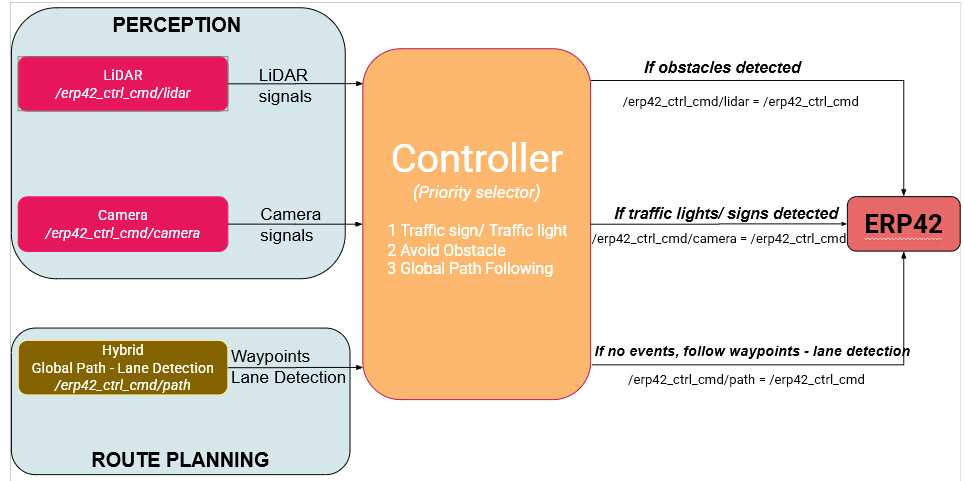
이 작업으로 명령이 없거나 오래됐을 때는 차를 세우는 쪽을 기본으로 두고, 판단·인지·제어를 나눠 보는 설계 방식을 익혔습니다.
실차 조정과 반복 테스트
저는 실차 시험에서 드러난 문제에 맞춰 센서 장착 프레임 배치와 실차 설정값을 직접 조정했습니다.
실도로 시험에서 이어진 문제
원정 연습 전 실도로 시험에서 측위·경로추종·차선 인식을 함께 돌리자 다음 문제가 이어져 대응 필요성을 확인했습니다.
- 카메라 영상 프레임 누락
- 전력 부족 — 보조배터리로 보강
- 진동에 따른 카메라·IMU 자세 변화
- 브레이크 오일 누유
- GNSS(위성 측위 수신기)·ROS 2 연결 끊김
중앙에 둔 GPS와 배치 기준
실차 시험에서는 노면이 나쁜 구간에서 센서가 흔들렸습니다. 센서 장착 프레임은 재설계할 여력이 부족했습니다. 저는 새로 설계하는 대신 실차에 직접 대 보며 센서 부착 위치와 주행 중 안정성을 고려해 배치 기준을 다시 세웠습니다. 위치 추정 기준점이 차량 중앙이라 GPS 등을 중앙에 두고, 보조 배터리·노트북을 올리려고 가운데를 높게 쌓는 구조로 바꿨습니다.
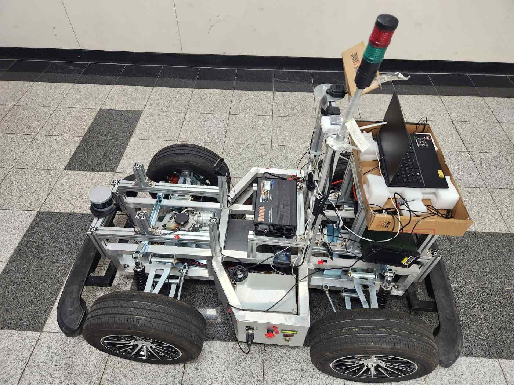
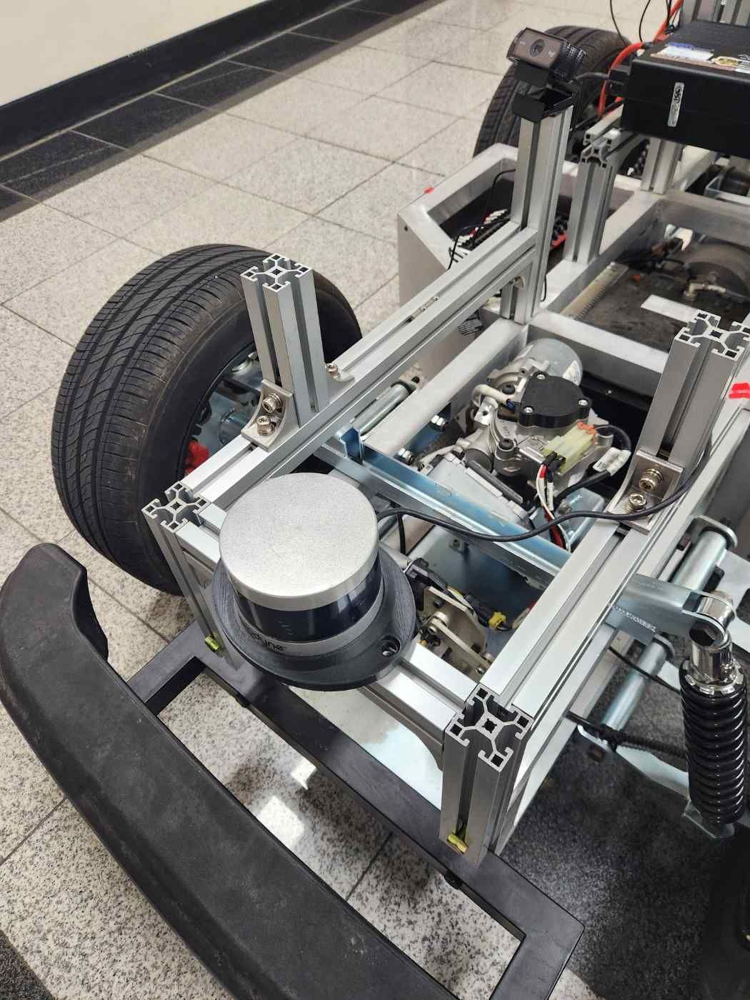
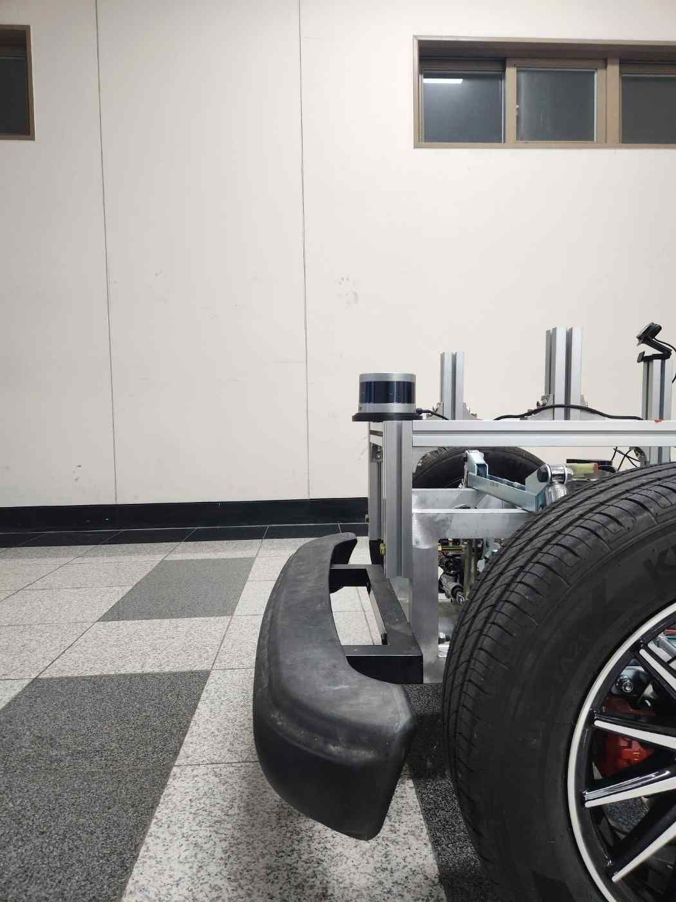
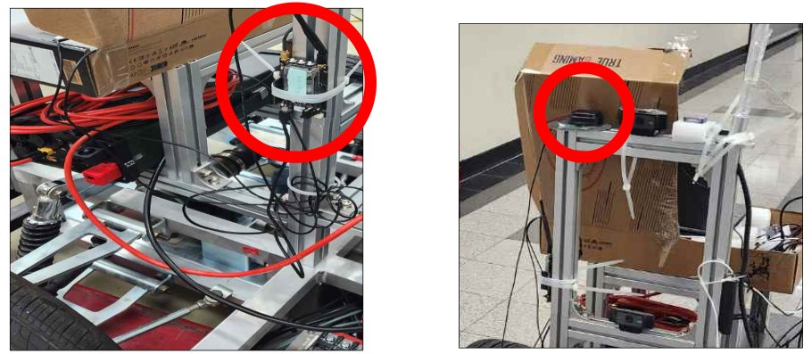
전륜 정렬과 rosbag 로깅
저는 카메라 장치·해상도, IMU 포트, RTK 접속, 속도·제동 값을 실차에 맞추고, 각 노드를 구동해 ROS 2로 통합했습니다. 직진 명령에도 차가 한쪽으로 휘는 현상도 있었는데, 전륜 정렬이 틀어진 것이어서 직접 조정했습니다. 팀원들과는 튜닝·테스트 주행·rosbag 로깅·분석을 반복했습니다.
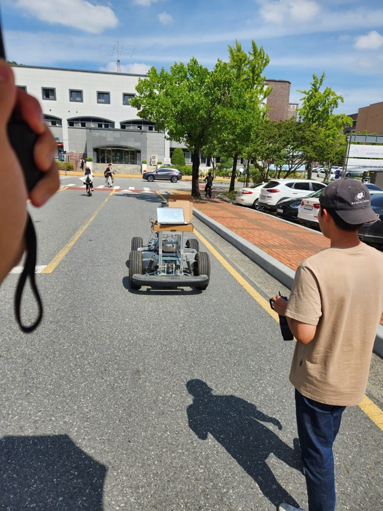
3D 점군 클러스터링 실험
팀은 테스트 주행으로 경로점 추종과 LiDAR 장애물 회피를 확인한 뒤, 회피를 2D 스캔 기반에서 3D 점군 클러스터링(가까운 점끼리 묶어 장애물로 보는 처리) 실험으로 넓혔습니다. 다만 차선 인식은 대회 주행 적용 여부가 확인되지 않았고, LiDAR 장애물 회피는 현재 저장소 코드에서 경로추종과의 연결이 완성되지 않은 실험 단계입니다.
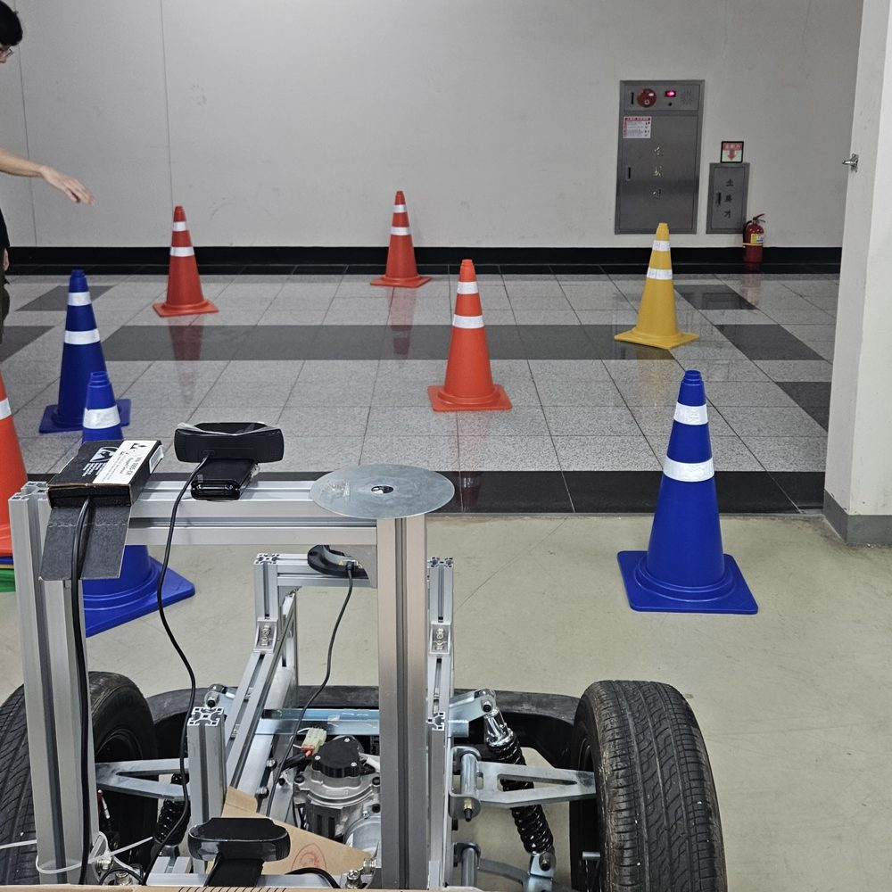
이 과정에서 문제가 생기면 코드보다 진동·전력·정렬 같은 하드웨어 설정과 차체 상태를 먼저 확인하고 실물에 맞춰 기준을 세우는 방식, 그리고 튜닝·테스트·로깅을 반복하며 성능을 끌어올리는 방식을 익혔습니다.
대회 주행 로그가 남아 있지 않아 완주 결과(팀 회고 기준)는 정량 지표 없이 적었습니다.
팀에서 일한 방식
저는 주간 일정 보고를 테스트 사진·영상과 함께 진행해 지도교수 보고와 팀 공유에 쓰고, 이후 대회에 참가할 후배들이 참고할 자료로도 남겼습니다. 당시 주행 기록(rosbag)을 정리했고, 다시 실험할 때 참고하도록 시뮬레이션에 필요한 구성과 의도한 실험 방법도 함께 기록했습니다.
본인 담당:
- 팀장(개발 일정 수립·공유, 지출 관리, 공학 실습실을 대여해 팀원과 함께 쓸 실습 환경 구성·물품·열쇠 관리, 인수인계 문서화)
팀원들과 함께:
- 센서 bring-up(센서 연결·첫 구동 점검)
배운 점
인지 기능을 더하기 전에 측위와 경로추종이라는 최소 기반부터 실차에서 다져야 상위 모듈이 빠져도 주행이 이어진다는 점은, 인지 일부가 빠진 채 완주한 경험(팀 회고 기준)으로 확인했습니다.
기술 상세
코드 근거
- 남아 있던 팀 코드를 모아 둔 개인 저장소 Erp42_ws — 기술 전체(측위·경로계획·판단·인지·차량 I/O)는 README 참고.